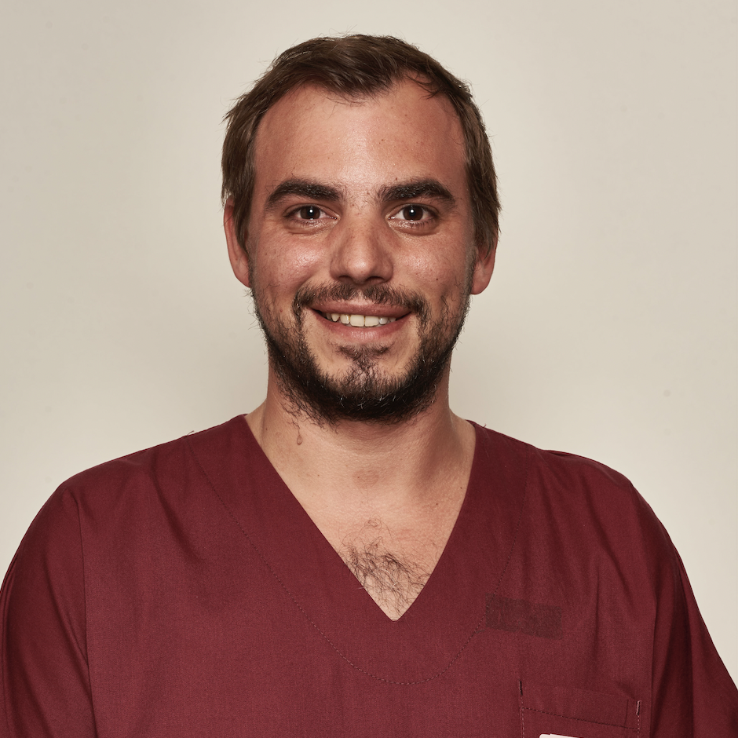

Qui sommes-nous ?
VITAE Formation Santé est une structure dédiée à l’ingénierie et au développement des compétences des professionnels de santé. Elle positionne la formation comme un levier stratégique au service de la qualité et de la sécurité des soins.
Origine et création
VITAE Formation Santé a été créée dans le cadre d’un travail
universitaire, à l’initiative de Giovanni SILVETTI, étudiant en Master 1 MEEF PIF IFMN
à l’INSPE – Sorbonne Université.
Elle fait suite à l’enseignement consacré à la conception et à la gestion de projets de formation.
Pourquoi ?
La création de VITAE repose sur le constat que les professionnels de santé évoluent dans des environnements de plus en plus complexes, nécessitant :
- Une adaptation constante des pratiques
- Une coordination renforcée des équipes
- Une capacité à agir efficacement en situation critique
Dans ce contexte, la formation apparaît comme un levier essentiel pour soutenir ces évolutions et garantir une réponse adaptée aux situations à forte criticité.
Notre vision
VITAE Formation Santé considère que le développement des compétences constitue un facteur déterminant pour :
- Garantir la qualité des soins
- Assurer la sécurité des patients
- Améliorer l’efficience des organisations de santé
Ainsi, la formation est envisagée comme un élément structurant du système de santé. Elle constitue un investissement durable au service des professionnels et des patients.
Notre engagement
La structure s’engage à proposer des formations :
- Adaptées aux réalités du terrain
- Construites selon une démarche rigoureuse d’ingénierie pédagogique
- Centrées sur l’humain, la collaboration et la pratique professionnelle
La formation, c’est vital. Le développement des compétences, essentiel.
Giovanni SILVETTI
Étudiant en Master 1 MEEF PIF IFMN - INSPE – Sorbonne Université